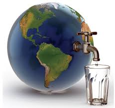
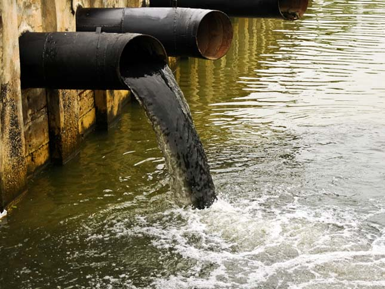

Alig van a világon olyan folyó illetve tó, amelyet nem szennyeztünk el.
A világ vízgyűjtő területének mindössze 14%-át teszik ki azok a folyók, melyekben az élővilág, elsőrendűen a halak populációja nem szenvedett súlyos károkat.
A folyók és tavak létfontosságú ökoszisztémák, melyek ugyan csak a bolygó 1%-át borítják, de az összes gerinces negyede, és nagyjából 17 ezer halfaj otthona, ráadásul emberek milliói számára biztosít táplálékot.
Az eddigi legátfogóbb tanulmányból az is kiderül, hogy a legsúlyosabb problémákat a szennyezés mellett az invazív fajok betelepítése, a túlhalászás és a vizek szabályozása, gátak építése jelenti, azonban egyre nagyobb jelentőségre tesz szert a klímaváltozás hatása is.
A Science folyóiratban megjelent kutatás közel 2500 folyót vizsgált a világ minden tájáról, és kiemelten kezelte a fajok ökológiai szerepét, és az elmúlt 200 évben a biodiverzitás helyzetében lezajlott változásokat.

A tanulmány megállapításai szerint a legrosszabb helyzetben a nyugat-európai és az észak-amerikai folyók vannak. Kontinensünkön például 93%-kal csökkent a vándorló folyami halak populációja 1970 óta.
A kutatást vezető Sébastien Brosse szerint vannak ugyan biztató változások, az elmúlt évtizedekben Európában például javult a vízminőség, de a változás sebessége úgy tűnik nem elégséges, hogy megállítsa a halállomány gyérülését.
A vízalatti életet fenyegető komoly veszélyek
Az ember évszázadok óta alakítja az európai víztesteket, hogy élelmiszert állítson elő, energiát termeljen és gondoskodjék az árvizek elleni védelemről. E tevékenységek fontos szerepet játszanak Európa gazdasági és társadalmi fejlődésében, ugyanakkor károsan hatnak a vízminőségre, illetve a halak és más vízi élőlények természetes élőhelyeire, különösen a folyókban. Sok esetben sajnálatosan a víznek jut az a feladat, hogy az ember által a levegőbe, talajba és vízbe kibocsátott szennyezést szállítsa, néha pedig maga a víz az emberi hulladék és vegyszerek végállomása.
Röviden szólva tehát az ember meglehetősen hatékonyan használja ki a víz előnyeit, ennek azonban a természeti környezet és a gazdaság fizeti meg az árát. Számos vízi ökoszisztémát és fajt fenyeget veszély: sok halpopulációnak csökken az egyedszáma, túl sok vagy túl kevés üledék jut el a tengerig, fokozódik a tengerparti erózió, és így tovább. Mindezek a változások végül kihatnak majd azokra a látszólag ingyenes szolgáltatásokra is, amelyeket a víztestek jelenleg az embernek nyújtanak.
Mik a vízszennyezés okai?
A szennyeződés többféle módon kerülhet a vizekbe. A statisztikák szerint a szennyvizek csaknem fele ipari tevékenység nyomán jön létre, amikor szerves és szervetlen vegyipari termékek kerülnek a természetes közegbe. Ide sorolandók például a hűtővizek, a technológiai használt vizek, az üzemi szociális szennyvizek, valamint az üzem területéről elvezetett csapadékvíz is.
Emellett 25%-ban a mezőgazdaság felelős a vízszennyezésért, főleg a különböző műtrágyák, növényvédő szerek használata miatt, de iparszerű állattartás eredményeként a hígtrágya szennyezés mértéke is igen magas. Mindezeken felül természetesen a háztartások is igen komoly mértékű vízszennyezést okoznak és bár minimális, de szerepe van mindebben a közlekedésnek, valamint a turizmusnak is.